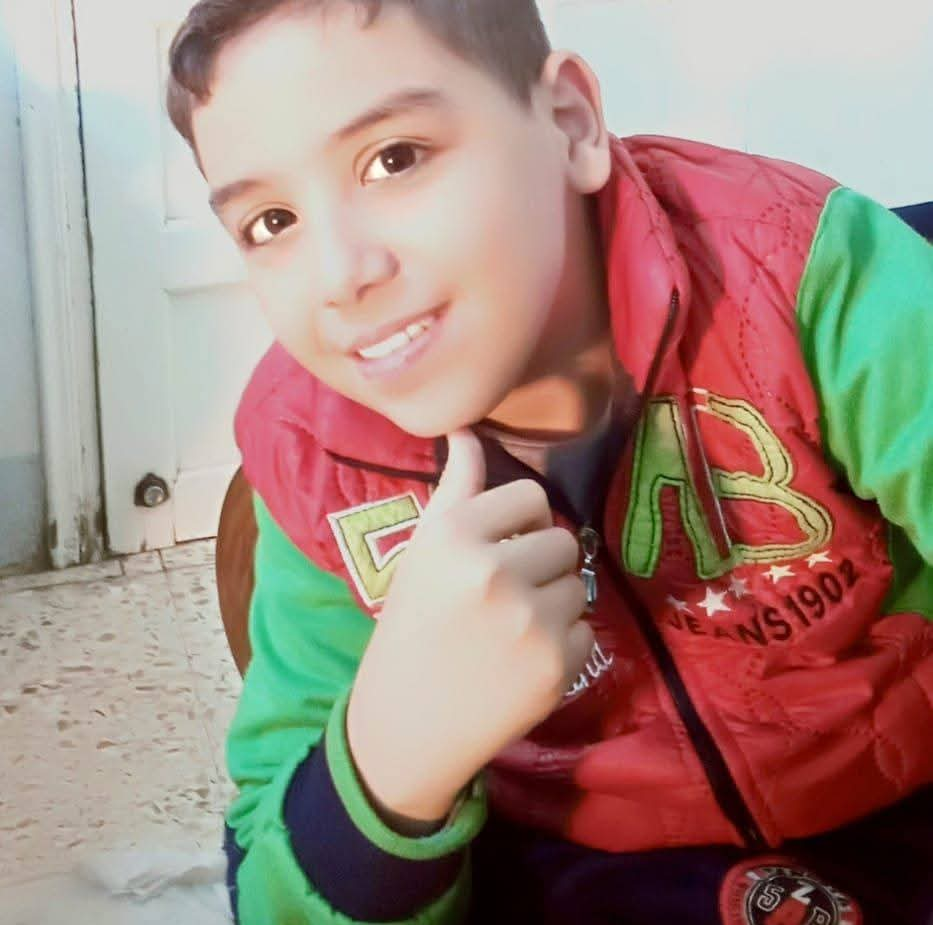

Hello, I'm مرحبًا، أنا
Filopater Mosa Hager فيلوباتير موسى حجر
BIS Student at Assiut University | C# Developer & Financial Accountant طالب بنظم معلومات الأعمال (BIS) | مطور C# ومحاسب مالي

About Me عني
An ambitious Business Information Systems (BIS) specialist at Assiut University, combining strategic financial analysis with advanced software engineering. متخصص طموح في نظم معلومات الأعمال (BIS) بجامعة أسيوط، أمتلك رؤية استراتيجية تدمج بين التحليل المالي وتطوير البرمجيات المتقدمة.
I believe technology is the core engine for transforming complex challenges into practical solutions. Therefore, I dedicate my efforts to architecting intelligent software that drives operational efficiency and elevates decision-making. أؤمن بأن التكنولوجيا هي المحرك الأساسي لتحويل التحديات المعقدة إلى حلول عملية؛ لذا أكرس جهودي لهندسة برمجيات ذكية تعزز الكفاءة التشغيلية وترتقي باتخاذ القرار في بيئات الأعمال.
With growing expertise in C# Development and intuitive Frontend Design, alongside a solid foundation in accounting, my goal is to build scalable digital products that deliver true value to organizations. بخبرة متنامية في تطوير تقنيات C# وتصميم واجهات المستخدم، إلى جانب خلفية قوية في المحاسبة، أهدف إلى بناء منتجات رقمية قابلة للتوسع تقدم قيمة حقيقية للمستخدمين والمؤسسات.
Learning Roadmap خارطة الطريق التعليمية
C# OOP البرمجة كائنية التوجه C#
Architecting robust, scalable, and maintainable enterprise software solutions applying advanced Object-Oriented principles. هندسة وبناء حلول برمجية مؤسسية قوية وقابلة للتوسع والاعتماد، مع تطبيق مبادئ البرمجة المتقدمة كائنية التوجه.
Financial Accounting المحاسبة المالية
Conducting comprehensive financial analysis, auditing, and seamlessly integrating core accounting logic into software architectures. إجراء تحليل مالي شامل، وتطبيق معايير المحاسبة والتدقيق بدقة لدمج المنطق المالي في هياكل البرمجيات الحديثة.
Frontend Development تطوير واجهات المستخدم
Designing and building modern, interactive user interfaces focused on delivering seamless and engaging experiences. تصميم وبناء واجهات رقمية تفاعلية وحديثة تركز على توفير تجربة مستخدم سلسة وجذابة.
My Projects معرض أعمالي
Audio Bible إنجيلك المسموع
A web application for listening to the Holy Bible with a smooth user experience. تطبيق ويب للاستماع إلى أسفار الكتاب المقدس بتجربة مستخدم مريحة.
NeoSound Store متجر نيو ساوند
An e-commerce web platform for browsing and purchasing premium earbuds and smartwatches. متجر إلكتروني متكامل لعرض وشراء أحدث سماعات الإيربودز والساعات الذكية بجودة عالية.